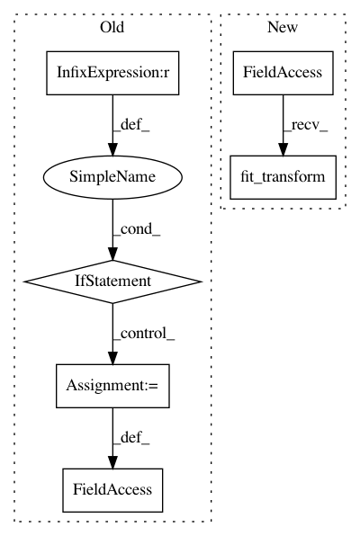

363cb21af01cd3c86067882b98eb08e6f4a33a75,plot_adhd_covariance2.py,,,#,81
Before Change
return region_ts
if __name__ == "__main__":
n_subjects = 10
tasks = []
rho = .1
mem = joblib.Memory(".")
print("-- Computing covariance matrices ...")
for n in range(n_subjects):
tasks.append(mem.cache(region_signals)(n))
print("-- Computing precision matrices ...")
from nilearn.group_sparse_covariance import GroupSparseCovariance
gsc = GroupSparseCovariance(rho=rho, max_iter=10, verbose=2, tol=0.01,
return_costs=True)
gsc.fit(tasks)
pl.figure()
pl.plot(gsc.objective_)
pl.grid()
// Check that duality gap is higher than estimated error.
pl.figure()
pl.semilogy(gsc.duality_gap_) // duality gap
pl.semilogy(gsc.objective_ - gsc.objective_[-1]) // estimated error
pl.grid()
pl.show()
After Change
msdl_atlas["maps"], resampling_target="maps",
low_pass=None, high_pass=0.01, t_r=2.5, standardize=True,
memory=mem, memory_level=1, verbose=1)
region_ts = masker.fit_transform(filename,
confounds=[hv_confounds, confound_file])
subjects.append(region_ts)
print("-- Computing precision matrices ...")
In pattern: SUPERPATTERN
Frequency: 3
Non-data size: 6
Instances
Project Name: nilearn/nilearn
Commit Name: 363cb21af01cd3c86067882b98eb08e6f4a33a75
Time: 2013-08-29
Author: philippe.gervais@inria.fr
File Name: plot_adhd_covariance2.py
Class Name:
Method Name:
Project Name: ysig/GraKeL
Commit Name: 0e84313d49f4b3f5aef0e0d558ecc34e271b2ad5
Time: 2018-01-24
Author: y.siglidis@gmail.com
File Name: grakel/graph_kernels.py
Class Name: GraphKernel
Method Name: fit
Project Name: anttttti/Wordbatch
Commit Name: 7170cdf9c6ed8beacd93738b0ec1c97cfbc23b6e
Time: 2018-04-12
Author: antti.puurula@yahoo.com
File Name: wordbatch/wordbatch.py
Class Name: WordBatch
Method Name: process